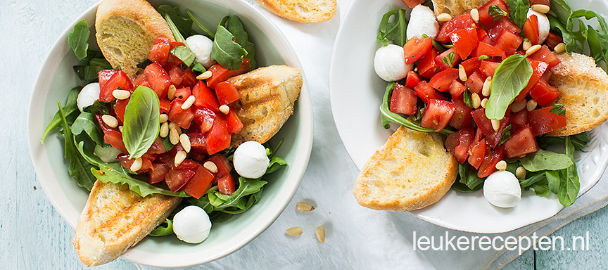

Bruschetta salade
Een salade van knapperig geroosterd brood met gemarineerde tomaatjes.
Ingrediënten
- 75 gr rucola
- 6 rijpe tomaten
- 12 sneetjes gegrild brood met knoflook
- verse basilicum
- 1 teentje knoflook
- 1 zakje mini mozzarella balletjes
- 1 eetlepel olijfolie (+ extra om te bestrijken)
- 1 eetlepel balsamico azijn
- 2 eetlepels pijnboompitten (geroosterd)
Bereidingswijze
-
Snijd de tomaten in vieren en verwijder de pitjes en het waterige gedeelte. Snijd de rest in blokjes.
-
Doe deze in een bakje met wat fijngesneden basilicum, eetlepel olijfolie, balsamico azijn en snufje peper en zout.
-
Dek af en zet dit apart. Bestrijk de sneetjes brood met een beetje olijfolie.
-
Grill ze in een grillpan of tosti ijzer krokant. Wrijf ze daarna in met een teentje knoflook. Verdeel de sla over borden of kommen.
-
Steek hier de stukjes gegrild brood in en verdeel de balletjes mozzarella hierover.
-
Schep de tomatensalsa er in het midden op. Bestrooi met wat pijnboompitten en extra basilicum.
